edge treatment · occluder fade · zoom comparison · edge-keying cleanup · DEMO IN STYLE B — refresh for the latest copies · the live proto is at /iso-proto.html (F = edge modes, -/= = zoom, G = debug)
CONCEPT-DRIVEN LAYOUT — pilot (THE SQUARE)
New pipeline: instead of placing props ad-hoc on the grid, a full-scene
concept image is generated first as the composition authority, then its arrangement (not its pixels)
is transcribed onto the grid with the real catalog. Below: the winning concept (Style B, never ships), the
old agent-placed square, and the new concept-driven rebuild — side by side by side. What the concept
taught that the scatter lacked: (1) the Heartlight plinth commands a clear cobbled ring, benches + braziers +
lampposts turned to face it; (2) the market is one dense shoulder-to-shoulder lane framing the north
processional road, not stalls floating in the middle; (3) festival dressing huddles into touching clusters
against anchors (haybale against a stall, apple-crates beside the pumpkin cart, well + flower-cart together,
firepit + logpile + bench together) rather than lone singletons; (4) generous open plaza breathing room so the
sacred flame reads; (5) framed edges — bunting, string-lights and corner trees box the composition. Verified:
zero boot errors, all four exits (bakery door · entrance · lane · gate) and all three reciprocal entry spawns
BFS-reachable, settled capture only. Gaps hit → docs/prop-wishlist.md.
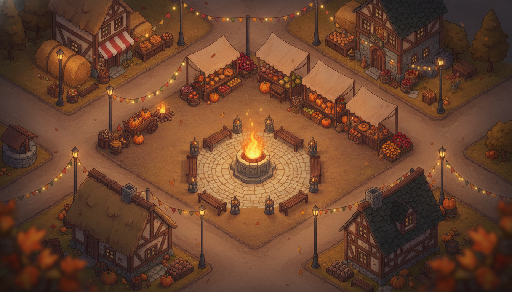
1 · CONCEPT — composition authority (Style B, never ships; not sliced)2 · OLD — agent-placed, props scattered
Ground system V2 (this round): the floor is now sampled iso-aware — structured
materials (cobble, deck, plank) render as one world-anchored pattern projected along the grid diagonals at honest
world scale (no more overlapping-tile double-exposure, no more "far too large"), and the Dellhollow / landing / stairs
decks are built up into real PIERS with edge fascia + stilt posts over the water. Forest floor/path = candidate B and
village grass = candidate A are now live; the dithered organic blend is the default. Cobble / water / interior-plank
picks are still open on the ground-picker.
Wave 4 world-stitch: all thirteen scenes now walk end-to-end as one graph —
forest → entrance → square → { lane → lake-interior · gate → descent } and
descent → stairs → dellhollow → { lockfive · landing · keepers-cottage }, plus the bakery
interior off the square. Every transition was verified both ways: all 24 destination spawns land on
walkable ground and every scene loads with zero console errors. Settled wide shots below, in
graph order. Fixed this pass: the two grey-cube placeholders on the Dellhollow deck were re-sliced
from the committed raw sheet into the real tar barrel and rope coil (the same fix
recovered the rowboat, used on the landing); the square's floating awning and the "rod" across
the guildhall wall were a stall cluster tucked behind the guildhall — nudged clear; the edge-fog skirt
was widened so the diagonal viewport corners dissolve to dusk instead of a hard black wedge.
Known limits: the water on the Dellhollow deck / landing / lock reads as walkable (no water
collision yet); the keeper's-cottage shelf still shows baker's bread (it shares the bakery interior
shell); the Old Gate arch sits just above this frame in the gate shot.
3 · Emberbrook square — the hub: bakery, well, heartlight brazier, festival stalls (nudged clear of the guildhall) → bakery-int · lane · gate · entrance
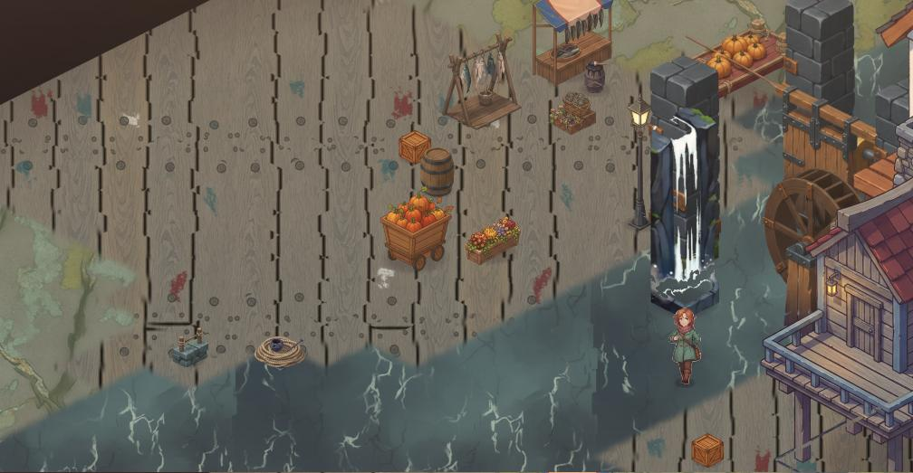
10 · Dellhollow market deck — lock gate, waterwheel, the white waterfall; real tar barrel & rope coil re-sliced in → stairs · lockfive · landing · keepers-cottage
demo in style B — the full playable demo, re-rendered
Director's pick from the exploration: candidate B (cel-painterly, matched to the Vesper sprite). The entire iso demo — festival square + bakery interior — is now re-rendered in B through the spec pipeline: blocks9 + festival props, cottage & guildhall, the interior shell and its six props, and the cobble/dirt/grass/plank ground textures. Five B assets (barrel, bench, tree, stall, bakery facade) were reused from the exploration; everything else was regenerated and re-gated. The canonical B recipe now lives in specs.json.style and is used verbatim in every generation prompt. Vesper reads native everywhere — no re-render of the character.
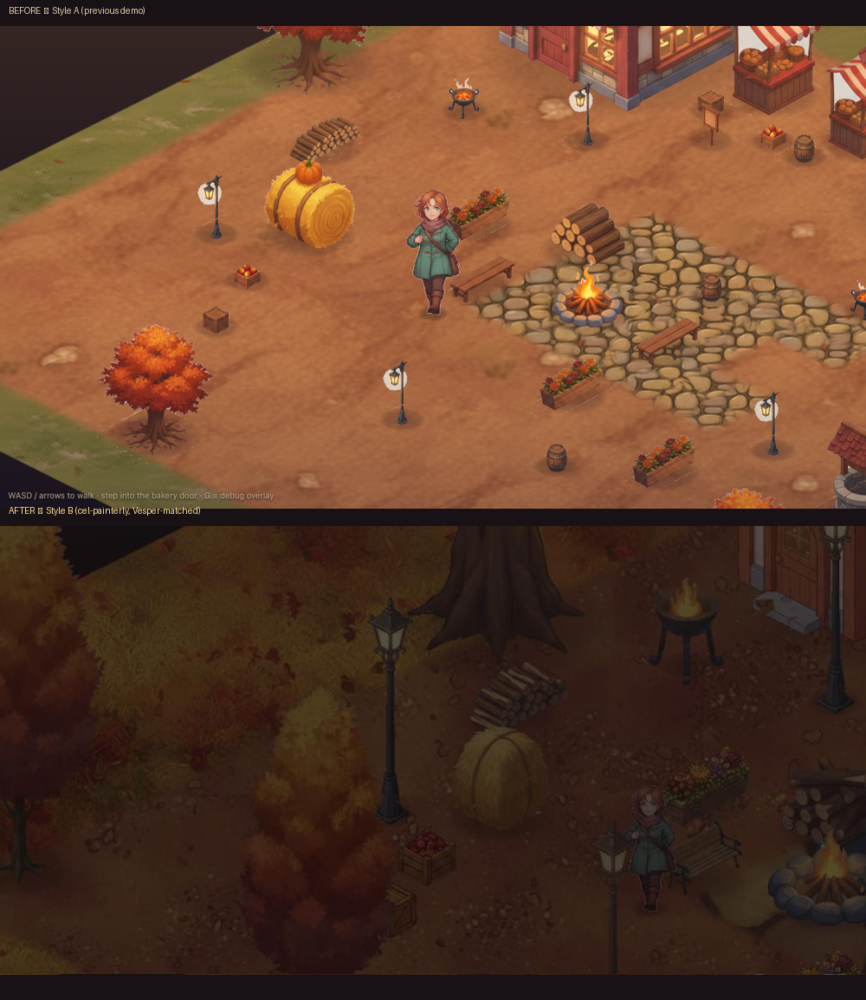
before / after — same square, Style A (top) vs Style B (bottom)
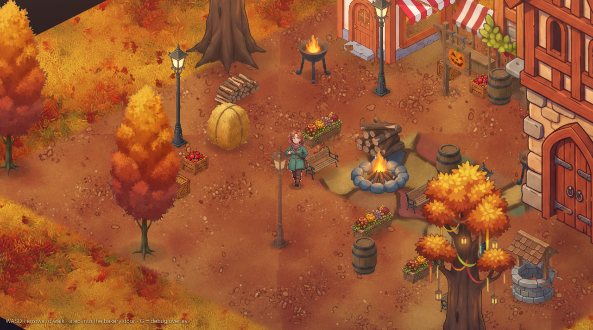
festival square, wide (zoom 0.8)
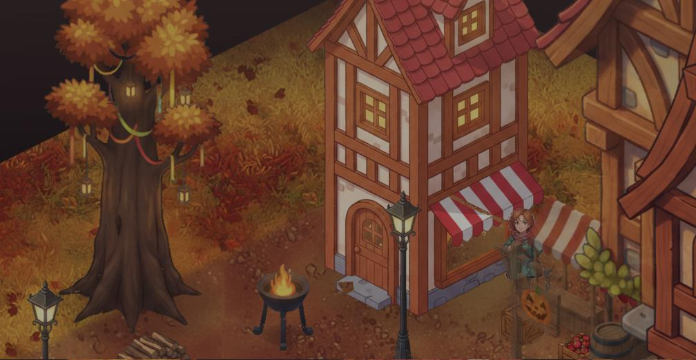
at the bakery door — the enter trigger
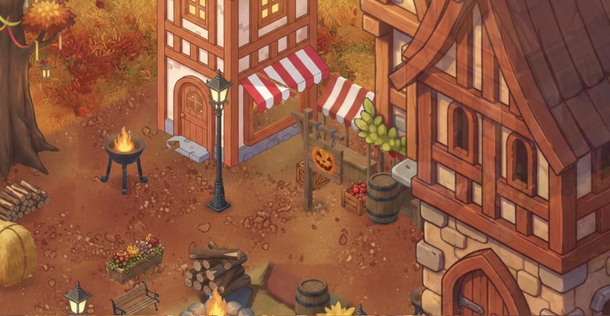
bakery · guildhall · cottage — buildings in B
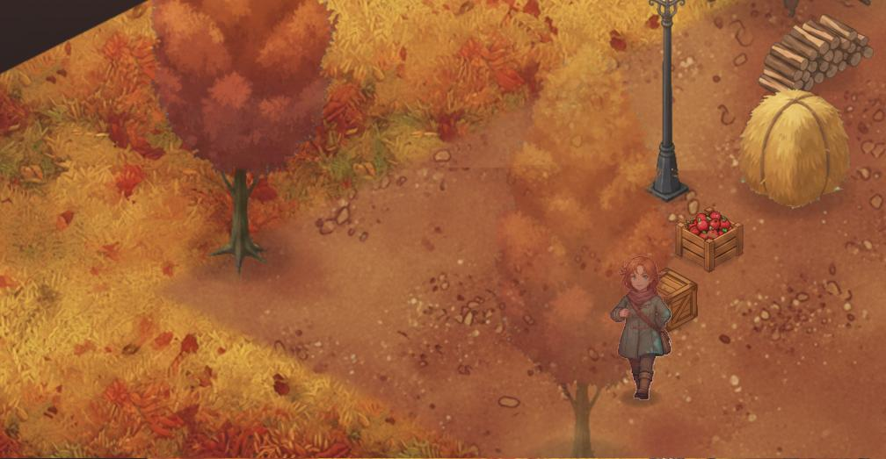
behind a tree — occluder fade, Vesper tracked
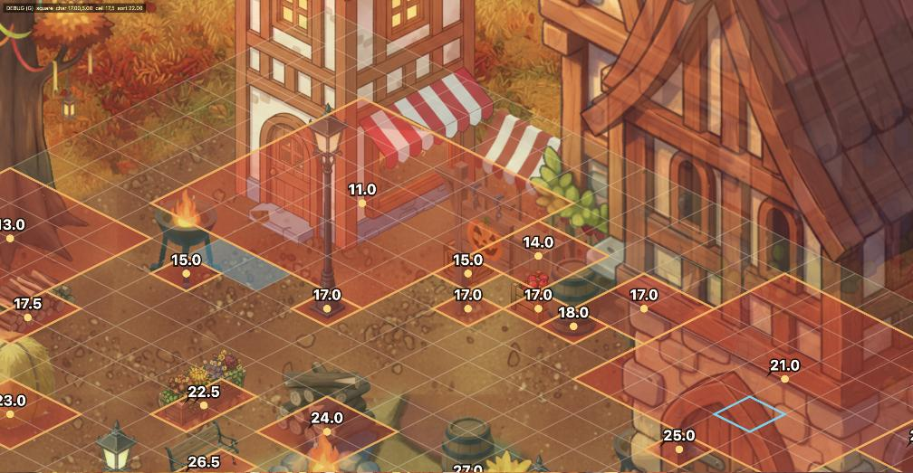
G overlay — walkable grid, footprints, sort keys
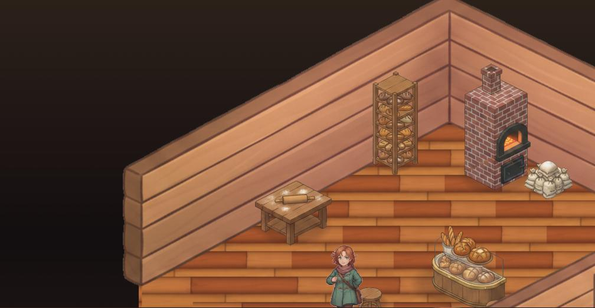
bakery interior — shell + six props in Bat the counter (3×2 redeclared footprint)
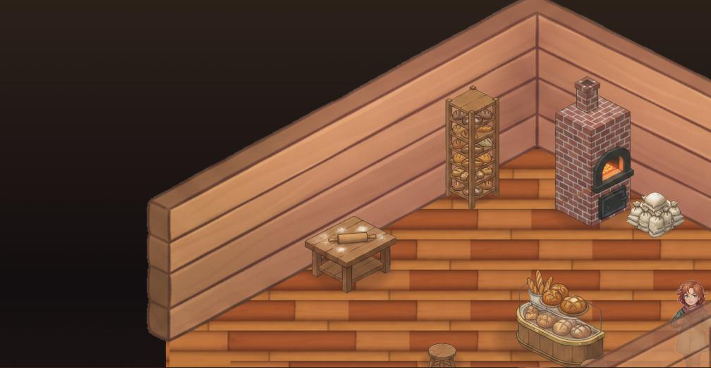
near the exit — near-wall band + door trigger
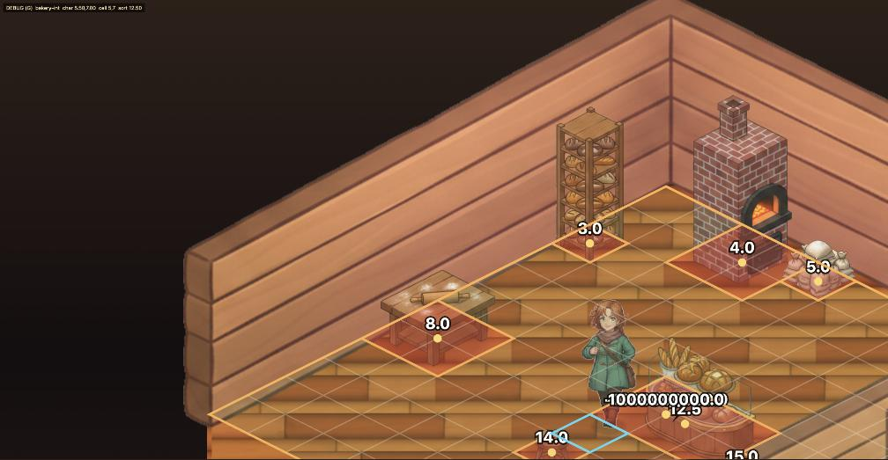
interior G overlay
the abyss fix — same corner, three modes (F cycles in-game)
Ground skirt: nine cells of border material baked past the map edge (widened from five in Wave 4 so the diagonal corners dissolve to dusk), rolling into fog. Interiors keep their diorama edge.
off — the old abyssskirt onlyskirt + fog (default)
occluder fade
Props fade to 45% only when they genuinely cover the character (opaque-pixel test); buildings to 75%; the interior near-wall to 50% at the exit. Shadows and the G overlay never fade.
behind the tree — faded to 45%, Vesper trackedstepped out — recovered to opaquebehind the bakery — gentle 75%
deep in the room — walls solidat the exit — near wall at 50%, no more vanishing
camera zoom (-/= in-game, default 0.8)
0.8 — the new default0.7 — wider still
edge-keying cleanup (previous round)
Soft alpha + despill + speck removal: the magenta "boxes" were the registration pads' anti-aliased rings — gone catalog-wide; teal halos cut 95–98%.
cleaned edges on dark background
full before/after contact sheet (large)
style exploration — three world treatments, Vesper anchored in each
Same five assets, same scene, same camera — only the rendering differs. A = incumbent painterly · B = cel-painterly pushed toward Vesper's own rendering · C = gouache storybook. All B/C assets passed the full pipeline gates. Agent's ranking: C for distinctiveness, B for purest harmony, both beat A.
A — incumbent (baseline)B — cel-painterly, Vesper-matchedC — gouache storybook
side by side
A close-up — barrel · tree edge · facadeB close-upC close-up